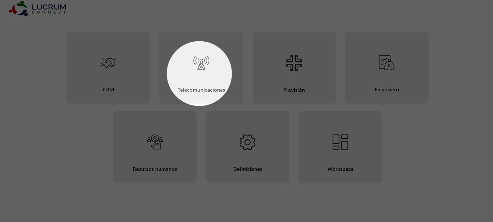
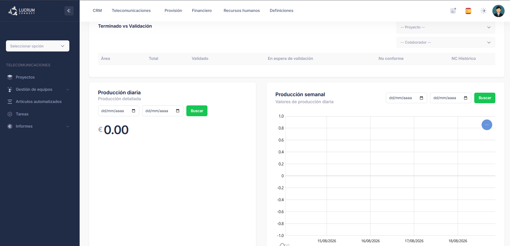
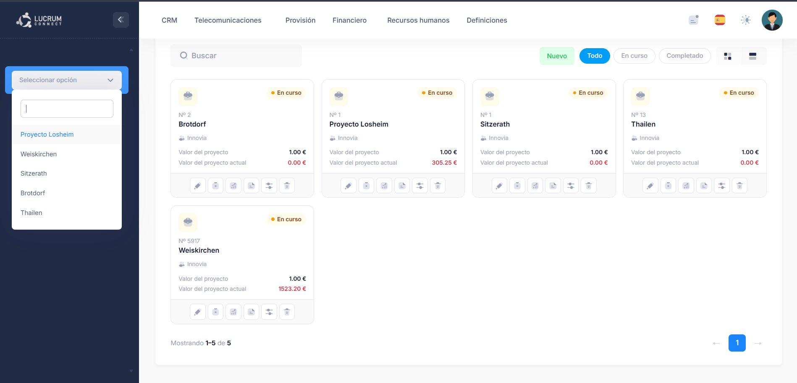
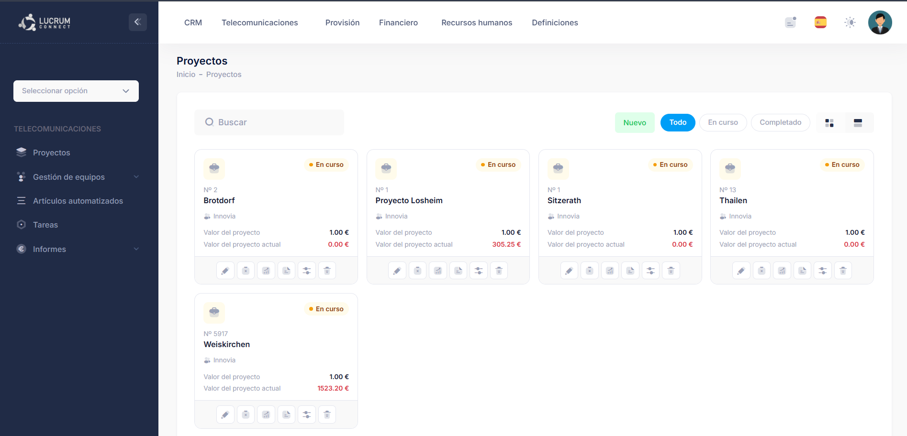
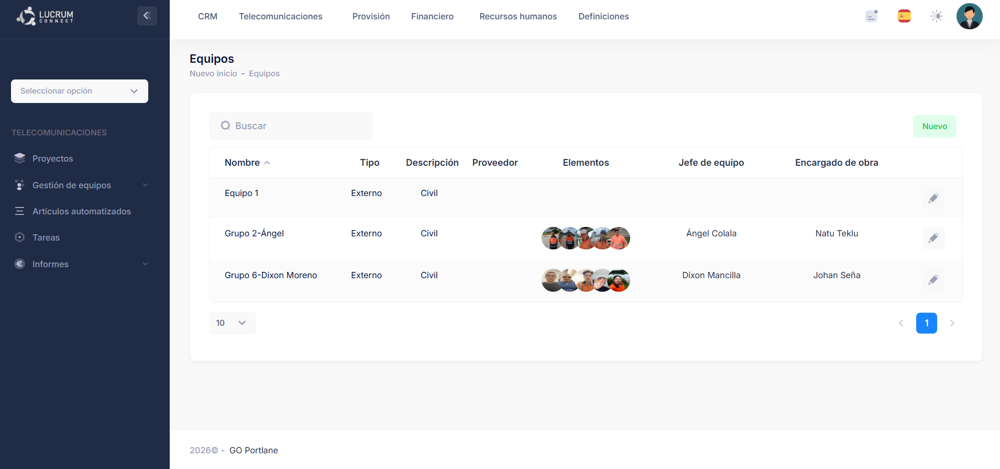
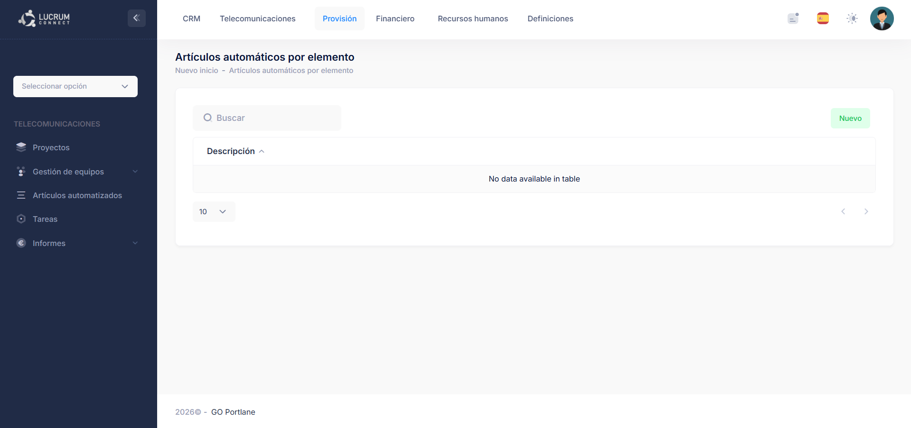
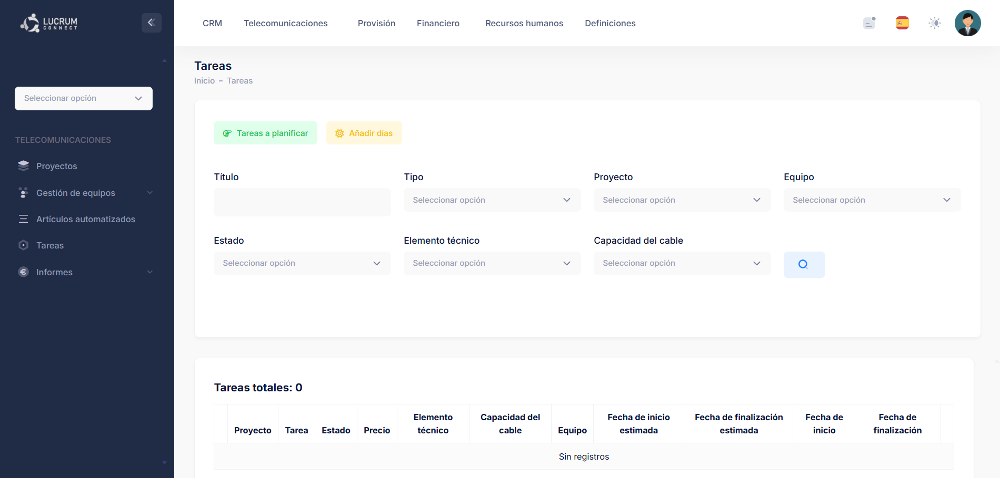
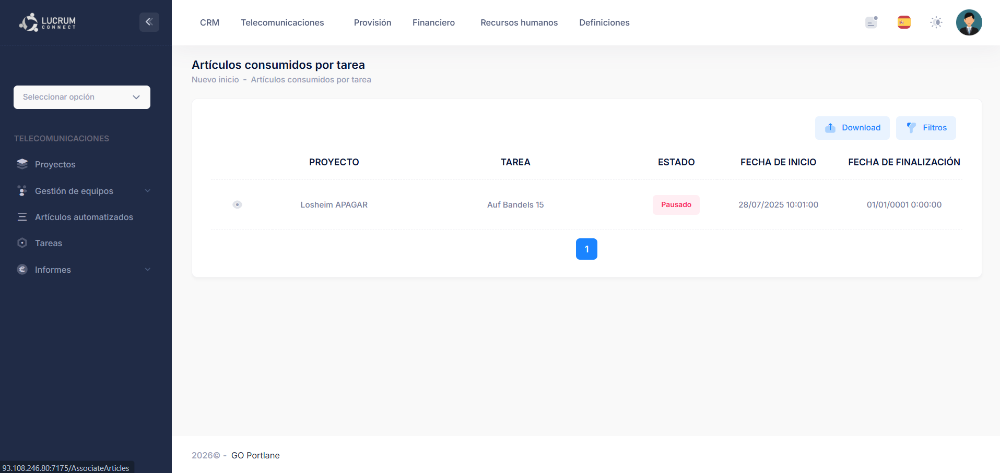

Módulo de Telecomunicaciones
El módulo de Telecomunicaciones reúne las principales herramientas utilizadas para organizar y gestionar la actividad operativa de los proyectos de telecomunicaciones.
Desde este módulo se accede a la información de los proyectos, los equipos de trabajo, los artículos asociados, las tareas de producción y los diferentes informes disponibles.

Telecomunicaciones
Conoce los apartados disponibles antes de comenzar a trabajar con el módulo.

Vista general del módulo Telecomunicaciones y de sus principales apartados.
Seleccionar un proyecto
Para trabajar con la operativa de un proyecto concreto, primero debe seleccionarse desde el menú lateral.
Acceso al entorno operativo
En el menú lateral encontrarás el desplegable “Seleccionar opción”. Al abrirlo se muestran los proyectos disponibles.
Selecciona el proyecto sobre el que quieras trabajar. La plataforma cargará entonces el entorno operativo correspondiente a ese proyecto.

Selección de un proyecto desde el menú lateral de Telecomunicaciones.
Selecciona el proyecto
Abre el desplegable y selecciona el proyecto con el que quieras trabajar.
Accede a su entorno
Desde ahí podrás trabajar con tareas, equipos, material, movimientos de stock, provisión, requisiciones y dashboards.
Apartados disponibles
Selecciona una sección para consultar su funcionamiento y las instrucciones detalladas.
Entorno operativo del proyecto
Accede al espacio de trabajo de un proyecto concreto. Desde aquí se gestionan las tareas, los equipos asignados, el material del proyecto, la provisión, los movimientos de stock, las requisiciones, las incidencias y los dashboards relacionados con su ejecución.
Ver guía del entorno del proyecto
Proyectos
Permite crear, consultar y editar la información general de los proyectos. Desde este apartado se gestionan datos como el cliente, el almacén, el tipo de negocio, el cronograma, la ubicación y otra información operativa y financiera.
Ver guía de Proyectos
Gestión de equipos
Permite organizar y consultar los equipos de trabajo utilizados en la operación, así como la información asociada a los integrantes y asignaciones de cada grupo.
Ver guía de Gestión de equipos
Artículos automatizados
Permite consultar y gestionar los artículos vinculados a las operaciones de Telecomunicaciones y su utilización dentro de las actividades realizadas.
Ver guía de Artículos automatizados
Tareas
Permite planificar, consultar y realizar el seguimiento de las tareas asociadas a los proyectos y a los equipos de trabajo. Este apartado concentra la actividad operativa diaria.
Ver guía de Tareas
Informes
Permite consultar información relacionada con la producción y con los artículos consumidos durante la ejecución de las tareas, utilizando filtros por fechas y proyectos.
Ver guía de Informes